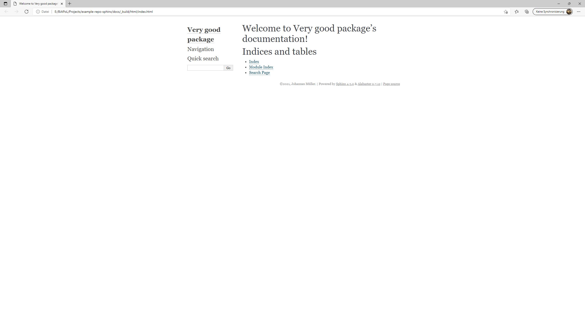
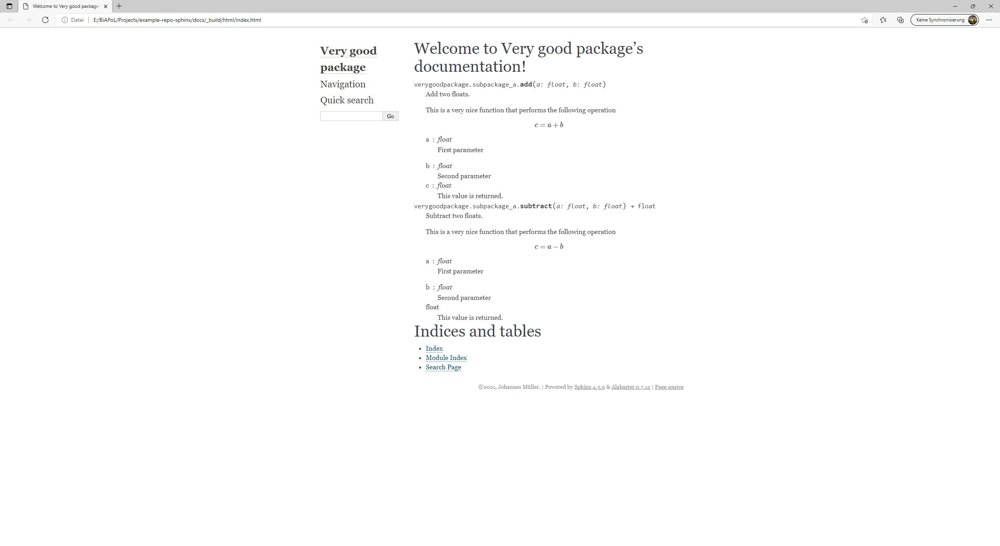
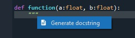
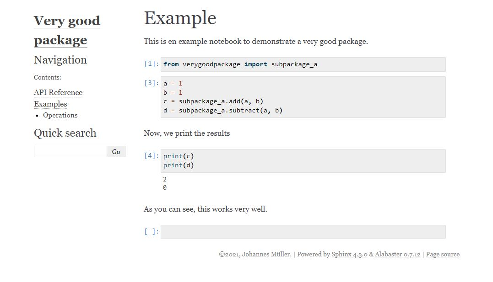
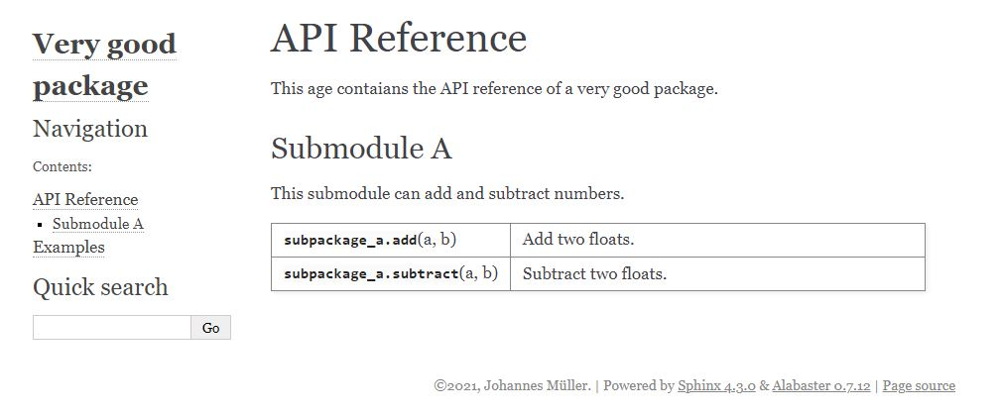

Automated package documentation with Sphinx
Contents
Automated package documentation with Sphinx#
Johannes Müller, November 24th 2021
Introduction#
We’ve all been there. We have written this wonderful piece of software that will essentially solve science’s most pressing problems, the only minor thing left to do is proper documentation. And this, although it’s only the last few meters until the finish lines, is where good projects often turn into bad projects.
Enter Sphinx: Sphinx is a tool that can automatically generate documentation in various formats (html, pdf, etc) based on the docstrings in your code. Popular examples for documentation pages that have been built with Sphinx, are scikit-learn or scikit-image.
This blog entry will walk you through the generation of documentation html pages for an exemplary github library using Sphinx and a few extensions.
Blogs on this topic will cover:
Getting started#
First off, clone the example repository from github into an empty directory with Github Desktop or using
git clone https://github.com/BiAPoL/example-repo-sphinx.git
cd example-repo-sphinx/
Optional, but recommended: Create a new environment for this tutorial using
conda create -n sphinx-tutorial
conda activate sphinx-tutorial
In order to get started with Sphinx, download Sphinx using conda install -c anaconda sphinx. Now, create a new directory in the project and call it docs/ and go into the new directory(cd docs/).
The repository has a typical structure: It consists of a top-level module (verygoodpackage) and a submodule (subpackage_a) that consists of function definitions in _operations.py. There are two functions (add and subtract) which we would like to document:
root
└───verygoodpackage
├─── __init__.py
└─── subpackage_a
├─── __init__.py
└─── _operations.py
├─── add(...)
└─── subtract(...)
Running Sphinx#
Now we have everything we need to run Sphinx for the first time. To set everything up for the first time, Sphinx provides the sphinx-quickstart command. This will run you through the following options:
Separate source and build directories (y/n) [n]:
Selecting n will lead to Sphinx creating directories _build, _static and _templates at this location. From what I see, this choice is largely up to what you prefer in terms of directory organisation. In this tutorial, we’ll proceed with the default option (n).
> Project name: Very good package
> Author name(s): Johannes Müller
> Project release []: 0.0.1
> Project language [en]:
This will generate a few directories and files, the most important of which are the following:
docs/
├─── make.bat
├─── Makefile
├─── conf.py
└─── index.rst
The make.bat allows you to generate html pages from the existing files, which is very handy. Create your first html pages using the command
make html. If you navigate into docs/_build/html afterwards, you see a number of created html files. The most important of these files is index.html, which serves as your documentation’s frontpage:

This looks nice, but as you see, there’s nothing on this page yet. Before we find our packages and modules on this page, we have to adjust a few settings in the configuration, which is done by making changes to conf.py.
First, you’ll have to change the directory where Sphinx looks for modules. At the top of
conf.py, uncomment the following lines and changesys.path.insert(0, os.path.abspath('.'))intosys.path.insert(0, os.path.abspath('../')).
import os
import sys
sys.path.insert(0, os.path.abspath('../'))
This tells Sphinx where to look for modules or functions to be documented.
Sphinx by itself is not able to parse docstrings of Python functions, but rather relies on extensions that take care of such things. In order to document functions or modules, we need to add the autodoc extension to Sphinx:
extensions = [
'sphinx.ext.autodoc', # Parses docstrings
]
We now need to tell Sphinx, that the docstrings of our modules, submodules and functions should actually be added to the generated documentation pages. For this, we need to make a few changes to
index.rst, which currently looks like this:
.. Very good package documentation master file, created by
sphinx-quickstart on Wed Nov 24 12:43:42 2021.
You can adapt this file completely to your liking, but it should at least
contain the root `toctree` directive.
Welcome to Very good package's documentation!
=============================================
.. toctree::
:maxdepth: 2
:caption: Contents:
Indices and tables
==================
* :ref:`genindex`
* :ref:`modindex`
* :ref:`search`
Note: This looks very familiar to the html index page from above, and index.rst is, in fact, its blueprint. These .rst files (so-called “stubs”) are used to tell Sphinx what should be documented. These stubs can be partly autogenerated but can and should partly be edited manually. These stub files can be used to fill html pages with documentation elements by adding so-called directives. Directives in Sphinx are usually introduced with the .. directive syntax. For instance, in the above-example of index.rst, the table-of-contents directive (.. toctree::) is added with the options :maxdepth: 2 and :caption: Contents:, but no entries have been added to this table of contents.
In order to add module
submodule_afrom our example repository to the documentation pages, add the automodule extension as a directive toindex.rst. By setting the option:imported-members:, we tell Sphinx to also document all the functions ofsubmodule_a, that have been made public in__init__.py:
Welcome to Very good package's documentation!
=============================================
.. automodule:: verygoodpackage.subpackage_a
:members:
:imported-members:
Indices and tables
==================
* :ref:`genindex`
* :ref:`modindex`
* :ref:`search`
Re-run
make html. If you openindex.htmlagain, the result will now look much closer to something like an actual documentation!

More advanced documentation#
Now that we have created our first documentation draft, this section will list a few tips and tricks to make your documentation a bit more clean and structured. The first thing we’d like to do, is to move function definitions to a separate API reference page.
Creating a separate API reference page.#
Creating such a page is not difficult. Create a new directory in your docs directory and name it _include. Move into this file and create a new file api_reference.rst. Change its content to
API Reference
=============
This age contains the API reference of a very good package.
Submodule A
------------------
This submodule can add and subtract numbers.
.. automodule:: verygoodpackage.subpackage_a
:members:
:imported-members:
In index.rst, remove the automodule-directive from the file and add a link to api_reference.rst instead, then re-run make html:
Welcome to Very good package's documentation!
=============================================
.. toctree::
:maxdepth: 2
:caption: Contents:
_include/api_reference
Indices and tables
==================
* :ref:`genindex`
* :ref:`modindex`
* :ref:`search`
The front-page and the API-reference page will now look like this:
{kind=link}
{kind=link}
Parsing pre-formatted docstrings#
Naturally, Sphinx only understands its associated markdown format (Restructured text aka rst-files). By adding the napoleon-extension to the Sphinx extensions in conf.py, Sphinx will be able to parse the typically used Numpy or Google-format docstrings. The extension is used by adding it to the list of extensions, e.g.
extensions = [
'sphinx.ext.autodoc', # Parses (sub)modules
'sphinx.ext.napoleon' # Parses Numpy docstrings
]
The numpy docstring, for instance, can be added in Spyder automatically by writing """ after a function/class definition and selecting the linted docstring option:
Note: Don’t forget to comma-separate the entries in the Python-list extensions!

Parsing mathematical expressions#
Sphinx is not per-se able to turn mathematical expressions into docstrings. This can be achieved using the mathjax extension for Sphinx, which can be added using
extensions = [
'sphinx.ext.autodoc', # Parses (sub)modules
'sphinx.ext.napoleon', # Parses Numpy docstrings
'sphinx.ext.mathjax' # Print mathematical expressions
]
To use mathematical formatting, indicate it in the docstring like this: .. math:: c = a + b. Following the .. math:: expression, you can use LaTeX-style formatting for equations, such as a = \frac{b}{c} in order to write a fraction of two numbers. (Never worked with LaTeX= See here for easy LaTeX-style formula-syntax generation!)
Parsing Jupyter notebooks#
Jupyter notebooks are a very handy tool to illustrate workflows and computations. Sphinx provides a tool to add Jupyter notebooks to documentation pages, which can be very helpful to set up an Examples subpage on your documentation. To make this run, download nbsphinx and pandoc:
conda install -c conda-forge nbsphinx pandoc
and add the extension to conf.py with
extensions = [
'sphinx.ext.autodoc', # Parses (sub)modules
'sphinx.ext.napoleon', # Parses Numpy docstrings
'sphinx.ext.mathjax', # Print mathematical expressions
'nbsphinx' # link notebooks
]
Now, move the included notebooks directory from root to docs/_include/, create a new file docs/_include/examples.rst and add the following content:
Examples
=============
This is the example library of a very good package
Operations
------------------
The operations module sums and subtracts numbers
.. toctree::
:titlesonly:
:maxdepth: 0
Example notebook <notebooks/Example1.ipynb>
Put a link to the examples page into your index.rst file:
Welcome to Very good package's documentation!
=============================================
.. toctree::
:maxdepth: 2
:caption: Contents:
_include/api_reference
_include/examples
Indices and tables
==================
* :ref:`genindex`
* :ref:`modindex`
* :ref:`search`
and re-run make html. This generates an entry with the notebook within the newly generated Examples page:

Make a functions overview#
Sometimes, especially when the package includes a very large number of functions, it is desirable to generate a list of functions (such as here in scikit-image). To do this, add the autosummary extension to the list of extensions in conf.py:
extensions = [
'sphinx.ext.autodoc', # Parses (sub)modules
'sphinx.ext.napoleon', # Parses Numpy docstrings
'sphinx.ext.mathjax', # Print mathematical expressions
'nbsphinx', # link notebooks
'sphinx.ext.autosummary', # Make module lists in table
]
In the above-generated api-reference stub (api_reference.rst), replace the automodule directive with the autosummary directive:
API Reference
=============
This age contains the API reference of a very good package.
Submodule A
------------------
This submodule can add and subtract numbers.
.. currentmodule:: verygoodpackage
.. autosummary::
:recursive:
:toctree: generated
subpackage_a.add
subpackage_a.subtract
This will create a list page with every function in a neat table, whereas clicking on the entry will lead to a separate page that hosts the documentation for this function. 
Host your documentation on Github#
There are plenty of options to have your documentation hosted online (e.g., https://readthedocs.org/), but one of the choices offering a bit more seamless integration is to have your documentation hosted directly on github. To do so, navigate to your repository on github and go to the Settings --> Pages tab. Here, you can choose the root directory for your documentation, which, in our case, should be set to main/docs/. This means that Github will look for index.html in the docs directory - which obviously is not at this location.
Hence, we create an html file in /docs, that redirects to the actual index.html-file, which was generated by Sphinx. To do so, create a new file index.html with the following content:
<meta http-equiv="refresh" content="0; url=./_build/html/index.html" />
With that, you should be good to go and have your documentation ready on github pages :)
404 error#
If you use a Sphinx-defined theme for your pages (e.g., alabaster), you may get a 404 error if you follow the link that is provided on Github pages. To counteract this error, create an empty file .nojekyll in /docs.
That’s it for now on this topic - this post is now long enough. Hope it helps and have fun!